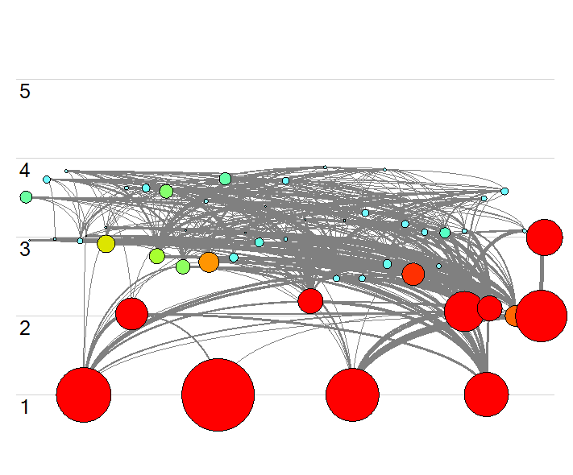
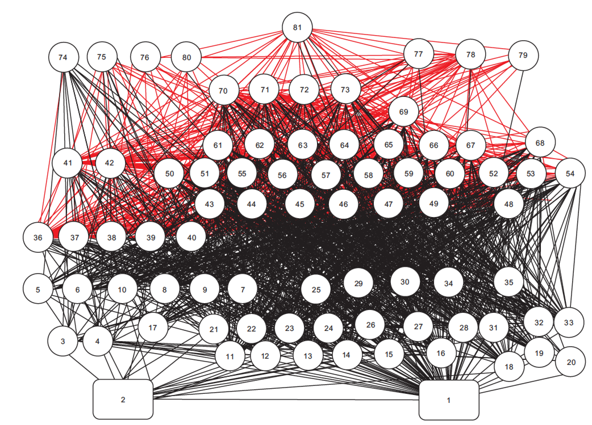
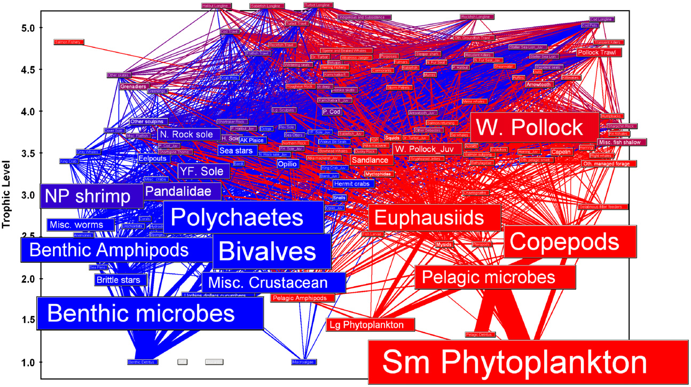
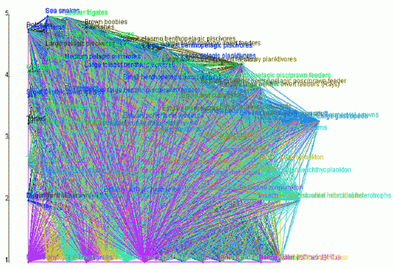

Visualizing Ecosystem Energy Flow in Complex Food Web Networks
Kelly Kearney
University of Washington
Joint Institute for the Study of the Atmosphere and Oceans (JISAO)
NOAA Alaska Fisheries Science Center
Mathworks Research Summit
Jun 2 - 4, 2018
Marine food webs as network graphs
- Nodes: state variables
- living critters
- detrital pools
- fishing fleets
- Edges: biomass/energy exchange
- primary production
- grazing
- predation
- egestion, excretion, respiration
- fisheries landings and discards
- non-predatory mortality
Are food web diagrams in the literature effective?
Are food web diagrams in the literature effective?
Tampa Bay via Ecopath with Ecosim v6.4
Are food web diagrams in the literature effective?
Link J (2002) Does food web theory work for marine ecosystems? Mar Ecol Prog Ser 230:1-9
Are food web diagrams in the literature effective?
Aydin K, Mueter F (2007) The Bering Sea-A dynamic food web perspective. Deep Res Part II Top Stud Oceanogr 54:2501-2525
Are food web diagrams in the literature effective?
"Figure 6. The food web of the Albatross Bay Ecopath model. The figure illustrates the comprehensiveness of the model: it is not something to interpret!"
Rochester et al. (2007) The North Marine Region marine bioregional plan: Information and analysis for the regional profile. Final report to the Department of the Environment and Water Resources. CSIRO, Cleveland
Why are food web diagrams so illegible?
- They're complex!
- 50-250 nodes
- 500-2500 edges
- Not small, but not "big data" big
- High (attempted) information content
- Trying to encode names, biomass pool size, flux size and direction, trophic properties, etc.
- Values span many orders of magnitude
Why are food web diagrams so illegible?
- Common node placement algorithms are inappropriate
- Vertical position has meaning
Why are food web diagrams so illegible?
- Common node placement algorithms are inappropriate
- Vertical position has meaning
- Modularity not a key feature
Why are food web diagrams so illegible?
- Common node placement algorithms are inappropriate
- Vertical position has meaning
- Modularity not a key feature
- Edges are the focus!
A new approach
- Visual aesthetics
- Polygons (vs. linewidth/markersize) add fine control
- A little transparency goes a long way
A new approach
- Trophic grouping
- Critters that play the same role should be close to each other
- Trophic similarity:
$T_{ij} = \frac{|P_i \cap P_j| + |p_i \cap p_j|}{|P_i \cup P_j| + |p_i \cup p_j|}$
Gauzens et al. (2014) Trophic groups and modules: two levels of group detection in food webs. J R Soc Interface 12:1-29
A new approach
- Customized force layout via D3
- Velocity Verlet integrator
- More flexibility than most force-directed layouts
- Forces:
- Collision avoidance
- Trophic level
- Trophic group
- Flux links
- Centering and charge
Data Driven Documents: https://d3js.org/
A new approach
- Divided Edge Bundling
- A variant on force-directed edge bundling
- Edges attract other edges that are nearby and traveling in the same direction
Selassie D, Heller B, Heer J (2011) Divided edge bundling for directional network data. IEEE Trans Vis Comput Graph 17:2354-2363
The food web layout algorithm
Tampa Bay
The food web layout algorithm
Tampa Bay
The food web layout algorithm
Tampa Bay
The food web layout algorithm
Tampa Bay
The food web layout algorithm
The Bering Sea
The food web layout algorithm
Albatross Bay
Is a web tool possible?

|
Build an Ecopath model |
| Trophic groups calculation | |
| Node layout tool | |
| Edge bundling (optional) | |
|
|
Final plot (static or interactive) |